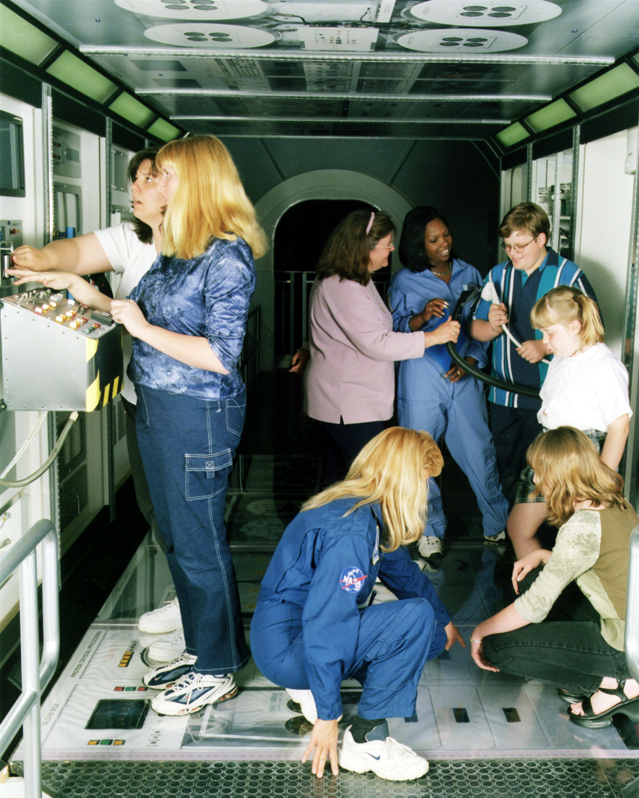

Tools to Work with Internet Archive Wayback Machine APIs
Description
The ‘Internet Archive’ provides access to millions of cached sites. Methods are provided to access these cached resources through the ‘APIs’ provided by the ‘Internet Archive’ and also content from ‘MementoWeb’.
What’s Inside the Tin?
The following functions are implemented:
Memento-ish API:
-
archive_available: Does the Internet Archive have a URL cached? -
cdx_basic_query: Perform a basic/limited Internet Archive CDX resource query for a URL -
get_mementos: Retrieve site mementos from the Internet Archive -
get_timemap: Retrieve a timemap for a URL -
read_memento: Read a resource directly from the Time Travel MementoWeb -
is_memento: Various memento-type testers (useful inpurrrordplyrcontexts) -
is_first_memento: Various memento-type testers (useful inpurrrordplyrcontexts) -
is_next_memento: Various memento-type testers (useful inpurrrordplyrcontexts) -
is_prev_memento: Various memento-type testers (useful inpurrrordplyrcontexts) -
is_last_memento: Various memento-type testers (useful inpurrrordplyrcontexts) -
is_original: Various memento-type testers (useful inpurrrordplyrcontexts) -
is_timemap: Various memento-type testers (useful inpurrrordplyrcontexts) -
is_timegate: Various memento-type testers (useful inpurrrordplyrcontexts)
Scrape API
-
ia_retrieve:Retrieve directory listings for Internet Archive objects by identifier -
ia_scrape: Internet Archive Scraping API Access -
ia_scrape_has_more: ‘ia_scrape()’ Pagination Helpers -
ia_scrape_next_page: Internet Archive Scraping API Access
Usage
## [1] '0.4.0'Memento-ish things
## # A tibble: 1 x 5
## url available closet_url timestamp status
## <chr> <lgl> <chr> <dttm> <chr>
## 1 https://www.r-project.org/news.html TRUE http://web.archive.org/web/20180717184942/h… 2018-07-17 00:00:00 200## # A tibble: 7 x 3
## link rel ts
## <chr> <chr> <dttm>
## 1 https://www.r-project.org/news.html original NA
## 2 http://web.archive.org/web/timemap/link/https://www.r-project.org/news.html timemap NA
## 3 http://web.archive.org/web/https://www.r-project.org/news.html timegate NA
## 4 http://web.archive.org/web/20041015031109/http://www.r-project.org:80/news.html first memento 2004-10-15 03:11:09
## 5 http://web.archive.org/web/20180717184942/https://www.r-project.org/news.html prev memento 2018-07-17 18:49:42
## 6 http://web.archive.org/web/20180912073722/https://www.r-project.org/news.html memento 2018-09-12 07:37:22
## 7 http://web.archive.org/web/20180912073722/https://www.r-project.org/news.html last memento 2018-09-12 07:37:22## # A tibble: 136 x 11
## link The.R.Foundation..… xfcnbtufsAs.qsp… V for..i i.s.length i.....if.s.char… X..else.if..s.c… X..else..m.
## <chr> <chr> <chr> <chr> <chr> <chr> <chr> <chr> <chr>
## 1 !DOCTYPE… <NA> <NA> <NA> <NA> <NA> <NA> <NA> <NA>
## 2 "html la… <NA> <NA> <NA> <NA> <NA> <NA> <NA> <NA>
## 3 head <NA> <NA> <NA> <NA> <NA> <NA> <NA> <NA>
## 4 "meta ch… <NA> <NA> <NA> <NA> <NA> <NA> <NA> <NA>
## 5 "meta ht… <NA> <NA> <NA> <NA> <NA> <NA> <NA> <NA>
## 6 "meta na… <NA> <NA> <NA> <NA> <NA> <NA> <NA> <NA>
## 7 title>R:… <NA> <NA> <NA> <NA> <NA> <NA> <NA> <NA>
## 8 "" <NA> <NA> <NA> <NA> <NA> <NA> <NA> <NA>
## 9 "link re… <NA> <NA> <NA> <NA> <NA> <NA> <NA> <NA>
## 10 "link re… <NA> <NA> <NA> <NA> <NA> <NA> <NA> <NA>
## # ... with 126 more rows, and 2 more variables: X..document.write.m. <chr>, X..... <chr>## Observations: 10
## Variables: 7
## $ urlkey <chr> "org,r-project)/news.html", "org,r-project)/news.html", "org,r-project)/news.html", "org,r-proje...
## $ timestamp <dttm> 2004-10-15, 2005-03-08, 2005-11-06, 2005-12-18, 2006-02-08, 2006-04-26, 2006-06-16, 2006-07-19,...
## $ original <chr> "http://www.r-project.org:80/news.html", "http://www.r-project.org:80/news.html", "http://www.r-...
## $ mimetype <chr> "text/html", "text/html", "text/html", "text/html", "text/html", "text/html", "text/html", "text...
## $ statuscode <chr> "200", "200", "200", "200", "200", "200", "200", "200", "200", "200"
## $ digest <chr> "SMRZAAPERPEU7ITWC2IBQOFZZ6KAVOYW", "5JHISLTUZUDE4FOVU4HEFNRJASMQTUHO", "RUDVI4NRO36J2VELVNNUP6Q...
## $ length <dbl> 793, 846, 897, 898, 918, 916, 902, 905, 902, 902mem <- read_memento("https://www.r-project.org/news.html")
res <- stringi::stri_split_lines(mem)[[1]]
cat(paste0(res[187:200], collaspe="\n"))## <li><a href="/all/20180102193419/https://www.r-project.org/about.html">About R</a></li>
## <li><a href="/all/20180102193419/https://www.r-project.org/logo/">Logo</a></li>
## <li><a href="/all/20180102193419/https://www.r-project.org/contributors.html">Contributors</a></li>
## <li><a href="/all/20180102193419/https://www.r-project.org/news.html">What’s New?</a></li>
## <li><a href="/all/20180102193419/https://www.r-project.org/bugs.html">Reporting Bugs</a></li>
## <li><a href="http://wayback.archive-it.org/all/20180102193419/http://developer.r-project.org/">Development Site</a></li>
## <li><a href="/all/20180102193419/https://www.r-project.org/conferences.html">Conferences</a></li>
## <li><a href="/all/20180102193419/https://www.r-project.org/search.html">Search</a></li>
## </ul>
## </div>
## <div class="col-xs-6 col-sm-12">
## <h2 id="r-foundation">R Foundation</h2>
## <ul>
## <li><a href="/all/20180102193419/https://www.r-project.org/foundation/">Foundation</a></li>Scrape API
## Observations: 130
## Variables: 3
## $ identifier <chr> "30minutemeals00rach", "A-logOnTheAirwaves-11417specialTopicCartoons", "ButterChicken", "CNNW_20...
## $ addeddate <chr> "2012-02-03T22:39:43Z", "2017-11-04T17:12:27Z", "2013-10-25T04:29:37Z", NA, NA, NA, NA, NA, NA, ...
## $ title <chr> "30-minute meals", "A-Log on the Airwaves - 11/4/17 (Special Topic: Cartoons)", "Butter Chicken ...## <ia_scrape object>
## Cursor: W3siaWRlbnRpZmllciI6IjAzLTEwLTE4X1NwYWNlLXRvLUdyb3VuZHMuemlwIn1d## # A tibble: 6 x 4
## file link last_mod size
## <chr> <chr> <chr> <chr>
## 1 00-042-154.jpg https://archive.org/download/00-042-154/00-042-154.jpg 06-Nov-2000 15:34 1.2M
## 2 00-042-154_archive.torrent https://archive.org/download/00-042-154/00-042-154_archive.torrent 06-Jul-2018 11:14 1.8K
## 3 00-042-154_files.xml https://archive.org/download/00-042-154/00-042-154_files.xml 06-Jul-2018 11:14 1.7K
## 4 00-042-154_meta.xml https://archive.org/download/00-042-154/00-042-154_meta.xml 03-Jun-2016 02:06 1.4K
## 5 00-042-154_thumb.jpg https://archive.org/download/00-042-154/00-042-154_thumb.jpg 26-Aug-2009 16:30 7.7K
## 6 __ia_thumb.jpg https://archive.org/download/00-042-154/__ia_thumb.jpg 06-Jul-2018 11:14 26.6K